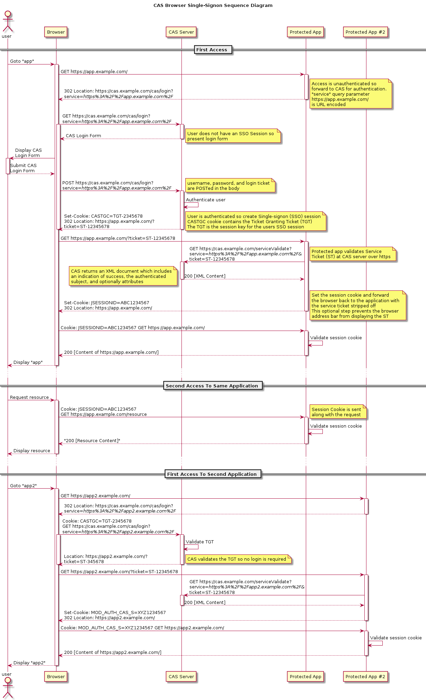

java技术栈
1 java基础：
1.1 算法
- 1.1 排序算法：直接插入排序、希尔排序、冒泡排序、快速排序、直接选择排序、堆排序、归并排序、基数排序
- 1.2 二叉查找树、红黑树、B树、B+树、LSM树（分别有对应的应用，数据库、HBase）
- 1.3 BitSet解决数据重复和是否存在等问题
1.2 基本
- 2.1 字符串常量池的迁移
- 2.2 字符串KMP算法
- 2.3 equals和hashcode
- 2.4 泛型、异常、反射
- 2.5 string的hash算法
- 2.6 hash冲突的解决办法：拉链法
- 2.7 foreach循环的原理
- 2.8 static、final、transient等关键字的作用
- 2.9 volatile关键字的底层实现原理
- 2.10 Collections.sort方法使用的是哪种排序方法
- 2.11 Future接口，常见的线程池中的FutureTask实现等
- 2.12 string的intern方法的内部细节，jdk1.6和jdk1.7的变化以及内部cpp代码StringTable的实现
1.3 设计模式
- 单例模式
- 工厂模式
- 装饰者模式
- 观察者设计模式
ThreadLocal设计模式
1.4 正则表达式
- 4.1 捕获组和非捕获组
- 4.2 贪婪，勉强，独占模式
1.5 java内存模型以及垃圾回收算法
5.1 类加载机制，也就是双亲委派模型
5.2 java内存分配模型（默认HotSpot）
线程共享的：堆区、永久区 线程独享的：虚拟机栈、本地方法栈、程序计数器
5.3 内存分配机制：年轻代（Eden区、两个Survivor区）、年老代、永久代以及他们的分配过程
5.4 强引用、软引用、弱引用、虚引用与GC
5.5 happens-before规则
5.6 指令重排序、内存栅栏
5.7 Java 8的内存分代改进
5.8 垃圾回收算法：
标记-清除（不足之处：效率不高、内存碎片）
复制算法（解决了上述问题，但是内存只能使用一半，针对大部分对象存活时间短的场景，引出了一个默认的8:1:1的改进，缺点是仍然需要借助外界来解决可能承载不下的问题）
标记整理
5.8 常用垃圾收集器：
新生代：Serial收集器、ParNew收集器、Parallel Scavenge 收集器
老年代：Serial Old收集器、Parallel Old收集器、CMS（Concurrent Mark Sweep）收集器、 G1 收集器（跨新生代和老年代）
5.9 常用gc的参数：-Xmn、-Xms、-Xmx、-XX:MaxPermSize、-XX:SurvivorRatio、-XX:-PrintGCDetails
5.10 常用工具： jps、jstat、jmap、jstack、图形工具jConsole、Visual VM、MAT
1.6 锁以及并发容器的源码
- 6.1 synchronized和volatile理解
- 6.2 Unsafe类的原理，使用它来实现CAS。因此诞生了AtomicInteger系列等
- 6.3 CAS可能产生的ABA问题的解决，如加入修改次数、版本号
- 6.4 同步器AQS的实现原理
- 6.5 独占锁、共享锁；可重入的独占锁ReentrantLock、共享锁 实现原理
- 6.6 公平锁和非公平锁
- 6.7 读写锁 ReentrantReadWriteLock的实现原理
- 6.8 LockSupport工具
- 6.9 Condition接口及其实现原理
- 6.10 HashMap、HashSet、ArrayList、LinkedList、HashTable、ConcurrentHashMap、TreeMap的实现原理
- 6.11 HashMap的并发问题
- 6.12 ConcurrentLinkedQueue的实现原理
- 6.13 Fork/Join框架
- 6.14 CountDownLatch和CyclicBarrier
1.7 线程池源码
- 7.1 内部执行原理
- 7.2 各种线程池的区别
2 web方面：
2.1 SpringMVC的架构设计
- 1.1 servlet开发存在的问题：映射问题、参数获取问题、格式化转换问题、返回值处理问题、视图渲染问题
- 1.2 SpringMVC为解决上述问题开发的几大组件及接口：HandlerMapping、HandlerAdapter、HandlerMethodArgumentResolver、HttpMessageConverter、Converter、GenericConverter、HandlerMethodReturnValueHandler、ViewResolver、MultipartResolver
- 1.3 DispatcherServlet、容器、组件三者之间的关系
- 1.4 叙述SpringMVC对请求的整体处理流程
- 1.5 SpringBoot
2.2 SpringAOP源码
2.1 AOP的实现分类：编译期、字节码加载前、字节码加载后三种时机来实现AOP
2.2 深刻理解其中的角色：AOP联盟、aspectj、jboss AOP、Spring自身实现的AOP、Spring嵌入aspectj。特别是能用代码区分后两者
2.3 接口设计：
AOP联盟定义的概念或接口：Pointcut（概念，没有定义对应的接口）、Joinpoint、Advice、MethodInterceptor、MethodInvocation
SpringAOP针对上述Advice接口定义的接口及其实现类：BeforeAdvice、AfterAdvice、MethodBeforeAdvice、AfterReturningAdvice；针对aspectj对上述接口的实现AspectJMethodBeforeAdvice、AspectJAfterReturningAdvice、AspectJAfterThrowingAdvice、AspectJAfterAdvice。
SpringAOP定义的定义的AdvisorAdapter接口：将上述Advise转化为MethodInterceptor
SpringAOP定义的Pointcut接口：含有两个属性ClassFilter（过滤类）、MethodMatcher（过滤方法）
SpringAOP定义的ExpressionPointcut接口：实现中会引入aspectj的pointcut表达式
SpringAOP定义的PointcutAdvisor接口（将上述Advice接口和Pointcut接口结合起来）
2.4 SpringAOP的调用流程
2.5 SpringAOP自己的实现方式（代表人物ProxyFactoryBean）和借助aspectj实现方式区分
2.3 Spring事务体系源码以及分布式事务Jotm Atomikos源码实现
- 3.1 jdbc事务存在的问题
- 3.2 Hibernate对事务的改进
- 3.3 针对各种各样的事务，Spring如何定义事务体系的接口，以及如何融合jdbc事务和Hibernate事务的
- 3.4 三种事务模型包含的角色以及各自的职责
- 3.5 事务代码也业务代码分离的实现（AOP+ThreadLocal来实现）
- 3.6 Spring事务拦截器TransactionInterceptor全景
- 3.7 X/Open DTP模型，两阶段提交，JTA接口定义
- 3.8 Jotm、Atomikos的实现原理
- 3.9 事务的传播属性
- 3.10 PROPAGATION_REQUIRES_NEW、PROPAGATION_NESTED的实现原理以及区别
- 3.11 事物的挂起和恢复的原理
2.4 数据库隔离级别
- 4.1 Read uncommitted：读未提交
- 4.2 Read committed ： 读已提交
- 4.3 Repeatable read：可重复读
- 4.4 Serializable ：串行化
2.5 数据库
5.1 数据库性能的优化
5.2 深入理解mysql的Record Locks、Gap Locks、Next-Key Locks
例如下面的在什么情况下会出现死锁：
start transaction; DELETE FROM t WHERE id =6; INSERT INTO t VALUES(6); commit;
5.3 insert into select语句的加锁情况
5.4 事务的ACID特性概念
5.5 innodb的MVCC理解
5.6 undo redo binlog
- 1 undo redo 都可以实现持久化，他们的流程是什么？为什么选用redo来做持久化？
- 2 undo、redo结合起来实现原子性和持久化，为什么undo log要先于redo log持久化？
- 3 undo为什么要依赖redo？
- 4 日志内容可以是物理日志，也可以是逻辑日志？他们各自的优点和缺点是？
- 5 redo log最终采用的是物理日志加逻辑日志，物理到page，page内逻辑。还存在什么问题？怎么解决？Double Write
- 6 undo log为什么不采用物理日志而采用逻辑日志？
- 7 为什么要引入Checkpoint？
- 8 引入Checkpoint后为了保证一致性需要阻塞用户操作一段时间，怎么解决这个问题？（这个问题还是很有普遍性的，redis、ZooKeeper都有类似的情况以及不同的应对策略）又有了同步Checkpoint和异步Checkpoint
- 9 开启binlog的情况下，事务内部2PC的一般过程（含有2次持久化，redo log和binlog的持久化）
- 10 解释上述过程，为什么binlog的持久化要在redo log之后，在存储引擎commit之前？
- 11 为什么要保持事务之间写入binlog和执行存储引擎commit操作的顺序性？（即先写入binlog日志的事务一定先commit）
- 12 为了保证上述顺序性，之前的办法是加锁prepare_commit_mutex，但是这极大的降低了事务的效率，怎么来实现binlog的group commit？
- 13 怎么将redo log的持久化也实现group commit？至此事务内部2PC的过程，2次持久化的操作都可以group commit了，极大提高了效率
2.6 ORM框架: mybatis、Hibernate
- 6.1 最原始的jdbc->Spring的JdbcTemplate->hibernate->JPA->SpringDataJPA的演进之路
2.7 SpringSecurity、shiro、SSO（单点登录）
- 7.1 Session和Cookie的区别和联系以及Session的实现原理
- 7.2 SpringSecurity的认证过程以及与Session的关系
- 7.3 CAS实现SSO（详见Cas（01）——简介）

2.8 日志
- 8.1 jdk自带的logging、log4j、log4j2、logback
- 8.2 门面commons-logging、slf4j
- 8.3 上述6种混战时的日志转换
2.9 datasource
- 9.1 c3p0
- 9.2 druid
- 9.3 JdbcTemplate执行sql语句的过程中对Connection的使用和管理
2.10 HTTPS的实现原理
3 分布式、java中间件、web服务器等方面：
3.1 ZooKeeper源码
- 1.1 客户端架构
- 1.2 服务器端单机版和集群版，对应的请求处理器
- 1.3 集群版session的建立和激活过程
- 1.4 Leader选举过程
- 1.5 事务日志和快照文件的详细解析
- 1.6 实现分布式锁、分布式ID分发器
- 1.7 实现Leader选举
- 1.8 ZAB协议实现一致性原理
3.2 序列化和反序列化框架
- 2.1 Avro研究
- 2.2 Thrift研究
- 2.3 Protobuf研究
- 2.4 Protostuff研究
- 2.5 Hessian
3.3 RPC框架dubbo源码
- 3.1 dubbo扩展机制的实现，对比SPI机制
- 3.2 服务的发布过程
- 3.3 服务的订阅过程
- 3.4 RPC通信的设计
3.4 NIO模块以及对应的Netty和Mina、thrift源码
- 4.1 TCP握手和断开及有限状态机
- 4.2 backlog
- 4.3 BIO NIO
- 4.4 阻塞/非阻塞的区别、同步/异步的区别
- 4.5 阻塞IO、非阻塞IO、多路复用IO、异步IO
- 4.6 Reactor线程模型
- 4.7 jdk的poll、epoll与底层poll、epoll的对接实现
- 4.8 Netty自己的epoll实现
- 4.9 内核层poll、epoll的大致实现
- 4.10 epoll的边缘触发和水平触发
- 4.11 Netty的EventLoopGroup设计
- 4.12 Netty的ByteBuf设计
- 4.13 Netty的ChannelHandler
- 4.13 Netty的零拷贝
- 4.14 Netty的线程模型，特别是与业务线程以及资源释放方面的理解
3.5 消息队列kafka、RocketMQ、Notify、Hermes
- 5.1 kafka的文件存储设计
- 5.2 kafka的副本复制过程
- 5.3 kafka副本的leader选举过程
- 5.4 kafka的消息丢失问题
- 5.5 kafka的消息顺序性问题
- 5.6 kafka的isr设计和过半对比
- 5.7 kafka本身做的很轻量级来保持高效，很多高级特性没有：事务、优先级的消息、消息的过滤，更重要的是服务治理不健全，一旦出问题，不能直观反应出来，不太适合对数据要求十分严苛的企业级系统，而适合日志之类并发量大但是允许少量的丢失或重复等场景
- 5.8 Notify、RocketMQ的事务设计
- 5.9 基于文件的kafka、RocketMQ和基于数据库的Notify和Hermes
- 5.10 设计一个消息系统要考虑哪些方面
- 5.11 丢失消息、消息重复、高可用等话题
3.6 数据库的分库分表mycat
3.7 NoSql数据库mongodb
3.8 KV键值系统memcached redis
- 8.1 redis对客户端的维护和管理，读写缓冲区
- 8.2 redis事务的实现
- 8.3 Jedis客户端的实现
- 8.4 JedisPool以及ShardedJedisPool的实现
- 8.5 redis epoll实现，循环中的文件事件和时间事件
- 8.6 redis的RDB持久化，save和bgsave
- 8.7 redis AOF命令追加、文件写入、文件同步到磁盘
- 8.8 redis AOF重写，为了减少阻塞时间采取的措施
- 8.9 redis的LRU内存回收算法
- 8.10 redis的master slave复制
- 8.11 redis的sentinel高可用方案
- 8.12 redis的cluster分片方案
3.9 web服务器tomcat、ngnix的设计原理
- 9.1 tomcat的整体架构设计
- 9.2 tomcat对通信的并发控制
- 9.3 http请求到达tomcat的整个处理流程
3.10 ELK（Elastic Stack）日志实时处理查询系统
- 10.1 Elasticsearch、Logstash、Kibana、新增 Beats
3.11 服务方面
- 11.1 SOA与微服务
- 11.2 服务的合并部署、多版本自动快速切换和回滚
- 11.3 服务的治理：限流、降级
具体见 张开涛大神的架构系列
服务限流：令牌桶、漏桶
服务降级、服务的熔断、服务的隔离：netflix的hystrix组件
11.4 服务的线性扩展
无状态的服务如何做线性扩展：
如一般的web应用，直接使用硬件或者软件做负载均衡，简单的轮训机制
有状态服务如何做线性扩展：
如Redis的扩展：一致性hash，迁移工具
11.5 服务链路监控和报警：CAT、Dapper、Pinpoint
3.12 Spring Cloud
- 12.1 Spring Cloud Zookeeper:用于服务注册和发现
- 12.2 Spring Cloud Config:分布式配置
- 12.2 Spring Cloud Netflix Eureka：用于rest服务的注册和发现
- 12.3 Spring Cloud Netflix Hystrix：服务的隔离、熔断和降级
- 12.4 Spring Cloud Netflix Zuul:动态路由，API Gateway
3.13 分布式事务
- 13.1 JTA分布式事务接口定义，对此与Spring事务体系的整合
- 13.2 TCC分布式事务概念
- 13.3 TCC分布式事务实现框架案例1：tcc-transaction
- 13.3.1 TccCompensableAspect切面拦截创建ROOT事务
- 13.3.2 TccTransactionContextAspect切面使远程RPC调用资源加入到上述事务中，作为一个参与者
- 13.3.3 TccCompensableAspect切面根据远程RPC传递的TransactionContext的标记创建出分支事务
- 13.3.4 全部RPC调用完毕，ROOT事务开始提交或者回滚，执行所有参与者的提交或回滚
- 13.3.5 所有参与者的提交或者回滚，还是通过远程RPC调用，provider端开始执行对应分支事务的confirm或者cancel方法
- 13.3.6 事务的存储，集群共享问题13.3.7 事务的恢复，避免集群重复恢复
- 13.4 TCC分布式事务实现框架案例2：ByteTCC
- 13.4.1 JTA事务管理实现，类比Jotm、Atomikos等JTA实现
- 13.4.2 事务的存储和恢复，集群是否共享问题调用方创建CompensableTransaction事务，并加入资源
- 13.4.3 CompensableMethodInterceptor拦截器向spring事务注入CompensableInvocation资源
- 13.4.4 Spring的分布式事务管理器创建作为协调者CompensableTransaction类型事务，和当前线程进行绑定，同时创建一个jta事务
- 13.4.5 在执行sql等操作的时候，所使用的jdbc等XAResource资源加入上述jta事务
- 13.4.6 dubbo RPC远程调用前，CompensableDubboServiceFilter创建出一个代理XAResource，加入上述 CompensableTransaction类型事务，并在RPC调用过程传递TransactionContext参与方创建分支的CompensableTransaction事务，并加入资源，然后提交jta事务
- 13.4.7 RPC远程调用来到provider端，CompensableDubboServiceFilter根据传递过来的TransactionContext创建出对应的CompensableTransaction类型事务
- 13.4.8 provider端，执行时遇见@Transactional和@Compensable，作为一个参与者开启try阶段的事务，即创建了一个jta事务
- 13.4.9 provider端try执行完毕开始准备try的提交，仅仅是提交上述jta事务，返回结果到RPC调用端调用方决定回滚还是提交
- 13.4.10 全部执行完毕后开始事务的提交或者回滚，如果是提交则先对jta事务进行提交（包含jdbc等XAResource资源的提交），提交成功后再对CompensableTransaction类型事务进行提交，如果jta事务提交失败，则需要回滚CompensableTransaction类型事务。
- 13.4.11 CompensableTransaction类型事务的提交就是对CompensableInvocation资源和RPC资源的提交，分别调用每一个CompensableInvocation资源的confirm，以及每一个RPC资源的提交CompensableInvocation资源的提交
- 13.4.12 此时每一个CompensableInvocation资源的confirm又会准备开启一个新的事务，当前线程的CompensableTransaction类型事务已存在，所以这里开启事务仅仅是创建了一个新的jta事务而已
- 13.4.13 针对此，每一个CompensableInvocation资源的confirm开启的事务，又开始重复上述过程，对于jdbc等资源都加入新创建的jta事务中，而RPC资源和CompensableInvocation资源仍然加入到当前线程绑定的CompensableTransaction类型事务
- 13.4.14 当前CompensableInvocation资源的confirm开启的事务执行完毕后，开始执行commit,此时仍然是执行jta事务的提交，提交完毕，一个CompensableInvocation资源的confirm完成，继续执行下一个CompensableInvocation资源的confirm，即又要重新开启一个新的jta事务RPC资源的提交（参与方CompensableTransaction事务的提交）
- 13.4.15 当所有CompensableInvocation资源的confirm执行完毕，开始执行RPC资源的commit，会进行远程调用，执行远程provider分支事务的提交，远程调用过程会传递事务id
- 13.4.16 provider端，根据传递过来的事务id找到对应的CompensableTransaction事务，开始执行提交操作，提交操作完成后返回响应结束
- 13.4.17 协调者收到响应后继续执行下一个RPC资源的提交，当所有RPC资源也完成相应的提交，则协调者算是彻底完成该事务
3.14 一致性算法
14.1 raft（详见Raft算法赏析）
- 14.1.1 leader选举过程，leader选举约束，要包含所有commited entries，实现上log比过半的log都最新即可
- 14.1.2 log复制过程，leader给所有的follower发送AppendEntries RPC请求，过半follower回复ok，则可提交该entry，然后向客户端响应OK
- 14.1.3 在上述leader收到过半复制之后，挂了，则后续leader不能直接对这些之前term的过半entry进行提交（这一部分有详细的案例来证明，并能说出根本原因），目前做法是在当前term中创建空的entry，然后如果这些新创建的entry被大部分复制了，则此时就可以对之前term的过半entry进行提交了
- 14.1.4 leader一旦认为某个term可以提交了，则更新自己的commitIndex，同时应用entry到状态机中，然后在下一次与follower的heartbeat通信中，将leader的commitIndex带给follower，让他们进行更新，同时应用entry到他们的状态机中
- 14.1.5 从上述流程可以看到，作为client来说，可能会出现这样的情况：leader认为某次client的请求可以提交了（对应的entry已经被过半复制了），此时leader挂了，还没来得及给client回复，也就是说对client来说，请求虽然失败了，但是请求对应的entry却被持久化保存了，但是有的时候却是请求失败了（过半都没复制成功）没有持久化成功，也就是说请求失败了，服务器端可能成功了也可能失败了。所以这时候需要在client端下功夫，即cleint端重试的时候仍然使用之前的请求数据进行重试，而不是采用新的数据进行重试，服务器端也必须要实现幂等。
- 14.1.6 Cluster membership changes
14.2 ZooKeeper使用的ZAB协议（详见ZooKeeper的一致性算法赏析）
- 14.2.1 leader选举过程。要点：对于不同状态下的server的投票的收集，投票是需要选举出一个包含所有日志的server来作为leader
- 14.2.2 leader和follower数据同步过程，全量同步、差异同步、日志之间的纠正和截断，来保证和leader之间的一致性。以及follower加入已经完成选举的系统，此时的同步的要点：阻塞leader处理写请求，完成日志之间的差异同步，还要处理现有进行中的请求的同步，完成同步后，解除阻塞。
- 14.2.3 广播阶段，即正常处理客户端的请求，过半响应即可回复客户端。
- 14.2.4 日志的恢复和持久化。持久化：每隔一定数量的事务日志持久化一次，leader选举前持久化一次。恢复：简单的认为已写入日志的的事务请求都算作已提交的请求（不管之前是否已过半复制），全部执行commit提交。具体的恢复是：先恢复快照日志，然后再应用相应的事务日志
14.3 paxos（详见paxos算法证明过程）
14.3.1 paxos的运作过程：
Phase 1: (a) 一个proposer选择一个编号为n的议案，向所有的acceptor发送prepare请求
Phase 1: (b) 如果acceptor已经响应的prepare请求中议案编号都比n小，则它承诺不再响应prepare请求或者accept请求中议案编号小于n的， 并且找出已经accept的最大议案的value返回给该proposer。如果已响应的编号比n大，则直接忽略该prepare请求。
Phase 2：(a) 如果proposer收到了过半的acceptors响应，那么将提出一个议案（n，v）,v就是上述所有acceptor响应中最大accept议案的value，或者是proposer自己的value。然后将该议案发送给所有的acceptor。这个请求叫做accept请求，这一步才是所谓发送议案请求，而前面的prepare请求更多的是一个构建出最终议案(n,v)的过程。
Phase 2：(b) acceptor接收到编号为n的议案，如果acceptor还没有对大于n的议案的prepare请求响应过，则acceptor就accept该议案，否则拒绝
14.3.2 paxos的证明过程：
1 足够多的问题
2 acceptor的初始accept
3 P2-对结果要求
4 P2a-对acceptor的accept要求
5 P2b-对proposer提出议案的要求（结果上要求）
6 P2c-对proposer提出议案的要求（做法上要求）
7 引出prepare过程和P1a
8 8 优化prepare
14.3.3 base paxos和multi-paxos
4 大数据方向
4.1 Hadoop
- 1.1 UserGroupInformation源码解读：JAAS认证、user和group关系的维护
- 1.2 RPC通信的实现
- 1.3 代理用户的过程
- 1.4 kerberos认证
4.2 MapReduce
- 2.1 MapReduce理论及其对应的接口定义
4.3 HDFS
- 3.1 MapFile、SequenceFile
- 3.2 ACL
4.4 YARN、Mesos 资源调度
4.5 oozie
- 5.1 oozie XCommand设计
- 5.2 DagEngine的实现原理
4.6 Hive
- 6.1 HiveServer2、metatore的thrift RPC通信设计
- 6.2 Hive的优化过程
- 6.3 HiveServer2的认证和授权
- 6.4 metastore的认证和授权
- 6.5 HiveServer2向metatore的用户传递过程
4.7 Hbase
- 7.1 Hbase的整体架构图
- 7.2 Hbase的WAL和MVCC设计
- 7.3 client端的异步批量flush寻找RegionServer的过程
- 7.4 Zookeeper上HBase节点解释
- 7.5 Hbase中的mini、major合并
- 7.6 Region的高可用问题对比kafka分区的高可用实现
- 7.7 RegionServer RPC调用的隔离问题
- 7.8 数据从内存刷写到HDFS的粒度问题
- 7.9 rowKey的设计
- 7.10 MemStore与LSM

...
...
Copyright 2021 sunfy.top ALL Rights Reserved